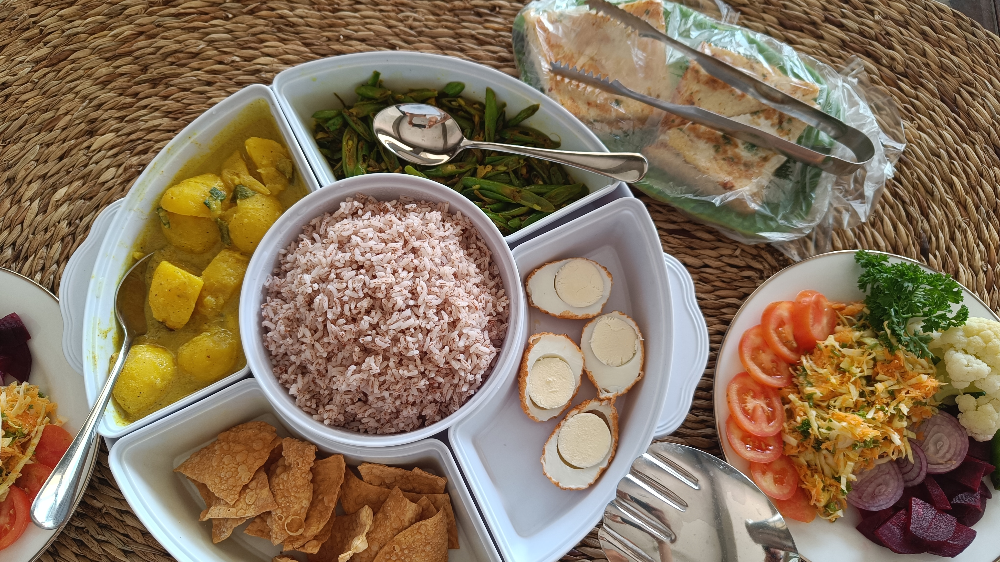

Tulles äsja tagasi 5-päevaselt reisikeselt saare keskossa, lõdvestume õndsalt taas oma privaatsesse paradiisi. Siin väike ülevaade meie kodust ja eluolust.
Jooksvalt täienev reisikiri (4)
Meie kohalik kodu ja eluolu
Kammisime oktoobris läbi bookingu pakkumised sisuliselt kogu lõunakalda ulatuses. Kuna turism alles taastub siin peale kodusõda ja kovidit, siis on pakkumist oluliselt rohkem kui nõudlust. Ka kvaliteeditasemelt on erisusi palju – tasub vaadata vaid neid, millel on keskmine hinne enam kui 9 punkti 10-st. Kusjuures tagasisidet on siin palju leplikumalt jagatud ja sellega tuleb nõudliku eestlasena arvestada, isegi kui on “erakordne” ja keskmine nt 9,5. Aga, mistahes miinused kompenseerib võõrustajate lahkus ja abivalmidus ja enda mõistev suhtumine.
Meie hakkasime oma võõrustajaga Whatsappi teel suhtlema kohe peale broneeringu tegemist, sest kuulutuses ilmnesid mõned vasturääkivused. Palusin ka videoklippe, et olla kindel, et see koht üldse eksisteerib ja vastab piltidele – on väidetavalt olnud üksikuid juhtumeid, mille tõttu tasub see asjaolu üle kontrollida, eriti kui tulla nt kaheks kuuks… Meie õnnistuseks tundus koht vaat et paremgi kui piltidel ja siiajõudes oma silmaga seda ilu tunnistades olime veel eriti rõõmsad. Enamusel siin pakutavatest majutuskohtadest siiski basseini ei ole või kui on, siis olles vastavuses muudegi tingimustega, kipub jääma kalliks. Meie reisiplaan oli õnnesärgis sündinud, kuna saime oktoobris majutust broneerides hinna ilma basseinita - bassein lisandus alles novembris!
Majapidamise ja meie eest hoolitsevad siin nii noorpere kui nende vanemad. Tharu on 31-aastane naisterahvas ja siin meie peamine kontakt. Sithara on tema abikaasa, kes haldab bookingu kuulutust ja kellega suhtlesime enne saabumist. Nägus paar, riigi rahvuskoondise tasemel sportlased nagu välja tuli 😉 kes saavad aprillis esimest korda lapsevanemateks.
Aia ja taimede eest hoolitseb mehe isa ja aed muutub meie silme all iga päevaga järjest hoolitsetumaks. Isal on ka tuktuk ja aeg-ajalt palume me tal end sõidutada, kuigi vähe, sest enamuse ajast soovime me siiski jalutada. Ema toidab ja koristab. Ja just praegu, nende lausete kirjutamise ajal, tõi ta meile papayast, mangost, banaanist ja anassist maitsva salati koos vaniljejäätisega, lihtsalt niisama. No ok, ma tegelikult siiski aiman põhjust… Üheks ööks tulid siia meie kõrvaltuppa just ühed kohaliku välimusega noored ja no perekond teab, kui üliväga me hindame seda, kui me saame siin olla privaatselt. Ehk omamoodi olukorra leevenduse eesmärgil see maius meile ilmselt toodi... aga me ei pahanda 😋
Ema söögitegemisoskused on üldse ekstraklassist. Need korrad kui me tellime kas hommiku- või lõunasööki, oleme rabatud toidu ilust ja maitsetest ja kogusest…. Oleme palunud nt riisi ja nuudlite koguseid vähendada, aga karrisid pole me suutnud küll kordagi alles jätta. Milline õnn, et saame oma koduses keskkonnas kõige erakordsemat kohalikku toitu süüa!

Kord toodi meile maitsmiseks keedetud kilpkonna mune… Pidid olema kallid ja väga tervislikud. Nohh, proovimise mõttes ära me need sõime, aga ütlesime läbi naeru, et rohkem ei pea neid tooma. Keedetud küll, aga katki rebitava koore sees oli kallerdav kraam ja pole just tore nt kilbi alget närida… Albumis on sellest ka üks video.
Fauna
Tänaseks oleme oma koduaias näinud juba igasugu põnevaid isendeid. Igapäevased külalised on saare põliselanikud purple-faced langurid (praegu ei leidnud õiget eestikeelset vastet). Need on musta värvi, pika heleda sabaga ja heledate põskedega pigem kartlikud pärdikud. Meie, st inimeste alale nad üldse ei tule ehk tuustivad häälekalt mööda puude latvu ja aiaääri. Siin toimetab ca 10-pealine pesakond, milles nii suuri kui väikeseid. Pakuvad vahvat vaheldust kui nad üksteist taga ajavad või jäävad kõrge aia peale pidama ja edasisi valikuid hindama. Vahest on kuulda, kuidas nad peakohal üle katuse jooksevad. Mingi aeg tagasi sõid jakavilja (jackfruit) otse selle kasvukohas (basseini kõrval kasvava puu otsas). Ühesõnaga, loomaaed tuli koju kätte, sest eks lastena käisimegi ju loomaaias peamiselt pärdikuid vaatamas 🐒
Olen kaks korda näinud ca meetripikkust varaani (water monitor). Viimati vänderdas rahulikult ühest aia servast diagonaalis üle muru jõe poole. Mul telefoni parasjagu käepärast ei olnud ja ei tahtnud teda ära ajada, nii et jäi üles pildistamata.
Jäälinnu kauneid siniseid tiibu näen terrassilt samuti, aga kuna ta on eriti pelglik, jääb ta meist kaugele ja minu telo zoom seda välja ei vea.
Eile nägime iguaani (Green forest lizard)!

Oma toast oleme ehmatusega tuvastanud nii saksa kui ameerika prussaka. Kuna Aksel on selgrootute huviline ja neid siin jagub, siis ma katsungi igast kohatud isendist pilti teha ja tema siis aitab määratleda. Ja Toomas on õnneks osutunud osavaks putukatabajaks, nii et elusad prussakad said kenasti tagasi loodusesse tassitud. Kui meie laiuskraadidel on prussakad pigem hügieeni näitajad, siis siin on nende loomulik elupaik, seega suhtumine on teine. Aga ehmatav on küll kui vannitoa ust lahti tehes see su nina ees alla kukub ja ta isegi paanikas omale pelgupaika otsib… Naiselik ürgne reaktsioon käivitub hästi 🔊 Kuidas nad meile tuppa neil kahel korral on sattunud – tegelikult nagu ei teagi, sest tegemist ikkagi uuema kiviehitisega, ja ka meie võõrustajad olid siiralt üllatunud. Nüüd tehaksegi väike tõrje meie välidušši poolsesse majaossa, aga õnneks õue, mitte tuppa.
Siin saaks igal õhtul ka “jaanimardikaid” edukalt jahtida – lendavaid tulukesi on siin õhtuti küllalt! Need tüübid siin muidugi lendavad (Eestis helendavad emased mittelendavad jaaniussid), seega päris 1:1 seda õnne otsimise mängu üle kanda ei anna, aga samas, miks ka mitte? Ei pea see õnn midagi nii ära peidetud olema 🍀
Tänaval jalutades möödume me iga kord mõnest lehmast, kes kõrvalisematel teedel vabalt ringi uitavad. Hulgim on (tänava)koeri, oluliselt vähem kasse. Kui koeri võetakse ka lemmik-loomadeks, siis kasse pigem mitte. Samas on koerad kõik pigem keskmise kasvuga ja krantsid ehk eritõugude kultusest on asi valgusaastate kaugusel.
Vesi
Üks meie põhilisi atraktsioone on loomulikult vesi. Naudime oma hommikusi, päevaseid ja õhtuseid värskendusi koduses basseinis, aga oleme pea iga päev ka ookeanis käinud, kasvõi jalgupidi (mõjub ülihästi sääsekuppudele). Laintesse tuleb end heita aukartuse ja ettevaatlikkusega, ent ilma julguseta vette ei saakski, vähemalt mitte meie kodulähedases rannas. Lained koguvad end randa jõudes üsna hirmuäratavalt suurteks ja kõva kärgatuse ja hooga paiskavad end valge vahuna laiali mööda rannariba.
Esimesel korral vette minnes meil veel terviklikku arusaamist ei olnud, kuidas siinsete lainetega hakkama saada, (hull)julgust aga jagus… ja kuigi me saime valdavalt väga hästi hakkama, siis lõpuks kostitati meid ka õppetunniga, kuidas edaspidi mitte käituda (ata-ata). Olime jäänud liiga lainete murdumiskoha ligidusse ja üks nn 99. laine (loe: hirmus suur!) sai mu enda haardesse ja keerutas mind korralikult nagu trumlis. Looduse jõu demonstratsioon oli üsna ehmatav, aga ka väga vajalik ja hariv! Lisaks olime me üksteise lähedal ja väga madalas vees, et ohtu tegelikult ei olnud. Edaspidi vette minnes tuleb ikka korralik adrekas sisse, aga nüüd me vähemalt teame, et tuleb valida pisut rahulikumate lainete aeg, liikuda kiiresti lainete murdumiskohast kaugemale ja jääda siis mõnusalt laintesse loksuma. Neid õpetusi õnnestub meil jagada ka ühele eestlasest paarile (meist pisut vanemad), kellega kohtume Taavetti Beach Club’is päeva õhtusse vedeledes. Nad on ka väga tublid, lähevad koos ikka päris kaugele ja jäävad pikaks ajaks sinna mõnulema, aga kolmandal korral tagasi tulles räägib naine, kuidas sai ka ikka koslepi kätte ja kuivõrd võimas on see looduse jõud ja kui erinevad on siin lained võrreldes koduse Hiiumaaga 🌊
Samal päeval näeme, kuidas üks kohalik noor pea ees megalaintesse sööstab, korduvalt ja korduvalt… Üldiselt on kohalikud ettevaatlikud ja näeme lapsi koos vanematega vees vaid riskivabades tsoonides, mh kividega eraldatud nn looduslikes basseinides.
0Ühel laupäeval kui oleme veetnud sisuliselt terve päeva rannas, kuulanud tundide viisi lainete võimsat müha, käinud mitu korda vees lainetes liuglemas, tunnen kodus voodiski olles enda sees lainetamist edasi. Nii võimas energia on ühtepidi energiat andev kui ka väsitav. Fotod ja videod ehk kannavad midagi sellest ka teieni!

📷 Pildialbum teksti juurde SIIN.
✍️ Kommenteeri või jaga oma mõtteid all!
Kommentaarid